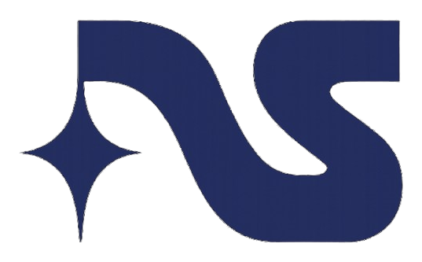

Miki S-Y
Hi, I'm Miki! I'm studying human-centered design, technology, and entrepreneurship at USC Iovine & Young Academy (on leave). I'm currently building Northstar, collecting large-scale data across U.S, India, and Brazil to make robots more reliable in the real world. I also co-founded FoundHer House, a nonprofit all-female hacker house in SF and NYC.
Some of my other interests include golf, chess, journaling, learning languages (Japanese, Russian, Spanish, and Portuguese), video games, reading, and building projects.
Work

Writing
Deployments Are Hard
A few thoughts on robot deployments and what needs to change.
Some Artists I Like
A curation of artists I've recently discovered, from Texas Hill Country landscapes to AI-generated golf scenes and Chinese-French modernism.
The State of Medical Billing
An analysis of hospital price transparency regulations, compliance challenges, and why healthcare costs remain hidden from patients.